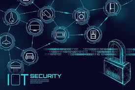

RESUME

Le nom vient de la contraction de maison en latin (Domus) et d'informatique ou automatique ou technique.
Ce n'est pas une "technologie du futur" en tant que tel car la domotique regroupe une douzaine de métiers différents, sans compter l'architecture, la décoration, l'environnement, etc. Il faut plutôt parler de technique ... et surtout d'acquisition de "confort d'usage". Le terme "Domotique" ne résume pas en lui même toutes les technologies approchées. Concernant son expansion, la domotique n'est pas encore totalement démocratisée. 2 segments de marchés sont à prendre en considération : La rénovation : Le particulier ressent un engouement pour l'automatisation de son habitat et de certaines tâches du quotidien qui ne sont pas forcément gratifiantes. La télécommande universelle commence à prendre une place non négligeable dans le pilotage de certaines application de confort, (éclairage, home cinéma, sécurité,etc). Le "courant porteur" et ses dispositifs simplifiés permettent maintenant à Monsieur et Madame "tout le monde" de mettre en place quelques dispositifs simples et à coût abordable. En cela, on peut dire que la domotique fait une entrée très remarquée dans les foyers avec une explosion depuis l'an 2000. Cela nécessite une infrastructure de câblage assez élaborée, et peu de professionnels savent réellement à ce jour maîtriser l'ensemble de ces technologies qui auront recours à ces câbles. C'est un marché en pleine expansion et qui tend à toucher toutes les classes socio-professionnelles avec des intérêts différents et des approches très variées.
.jpeg)
C'est l'ensemble des techniques et technologies de l'électronique, de l'électricité, de la mécanique, des télécommunications et de l'informatique appliquées à la gestion automatisée des bâtiments individuels et collectifs.
Elle consiste a mettre en place des réseaux reliant différents type d'équipements (électroménager, hifi, équipement domotique, etc) dans la maison. Ainsi, elle regroupe tout un ensemble de services permettant l'intégration des technologies modernes dans la maison.
On peut donc distinguer deux domaines d'application de la domotique:
-Les fonctions domestiques comme le chauffage, l'éclairage, la ventilation, la commande des appareils électroménagers. Il s'agit de la gestion des flux d'énergie(eau, gaz, électricité).
-La gestion des flux de données: téléphone, radio/ télévision, informatique.
la domotique permet :
-L'automatisation d’un bâtiment
-De contrôler sa maison du bout des doigts
-De programmer et de coordonner des tâches et des services dans l’habitat
-De recevoir et de donner de l’information
.jpeg)